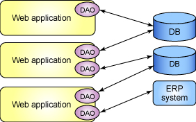
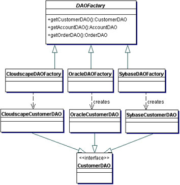

How do web-based applications connect to the database to retrieve data? Most web-based applications are data intensive, which means a database is necessary. Exactly how does this fit into the MVC paradigm, where everything is strictly separated. Well, the short answer is that the data is part of the model portion of the MVC paradigm.
The more complex answer includes the complications that occur when interacting with the entity relationship model that modern databases use. How do the entities relate to the objects that are created in the web-based applications? The relations and tables contain the information that form objects. There is a way to form objects from these relations and the solution comes in the form of Data Access Objects (DAO) design pattern.
Web based applications could also access other persistent storage, such as LDAP and ERP systems.
The Data Access Object design pattern is used to access data from persistent sources (Relational Database or other web services).

The DAO acts as a bridge between the persistent data sources and the web based application. They also help in translating the relational model to the object orientated model.
The DAO design pattern is a set of classes and interfaces that allow for that bridge between the persistent data source and the web based application to exist.
Basically, when the application needs to use data from the database it will invoke the DAO. The DAO will run the query necessary and will create objects from the resultset.
The DAO design pattern can be implemented with the following items:
The DAO factory class will generate the class that implements the correct concrete class that implements the DAO interface. The DAO interface is required because multiple data stores could be used. The Data transfer object is the object that is returned from the DAO class.
Here is an example of a class hierarchy for an abstract factory implementation of the DAO pattern.

The DAOFactory is an abstract class that the lower classes will extend. Each of classes that extend the DAOFactory class are for different persistent data stores. In this case there are three: cloudscape, oracle, and sybase. Each of those factories create DAO objects that run the correct queries for that particular data store and implement the CustomerDAO interface, so they each have the same methods. The DAO objects then create Customer objects that are utilized by the business logic.
The next lecture will focus on Hibernate, an open source framework for interacting with mutliple data stores.
Sources:
Sullivan, Sean. "Advanced DAO Programming." 07 October 2003. IBM Developerworks. 15 April 2009 <http://www.ibm.com/developerworks/library/j-dao/>.
Sun Microsystems. "Data Access Object." 2002. Core J2EE Patterns. 14 April 2009 <http://java.sun.com/blueprints/corej2eepatterns/Patterns/DataAccessObject.html>.